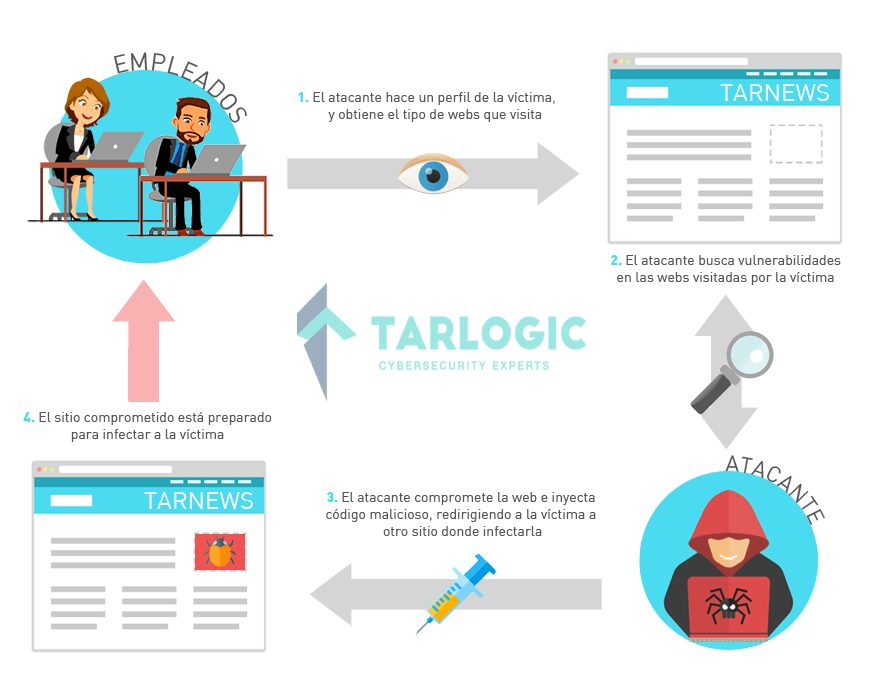
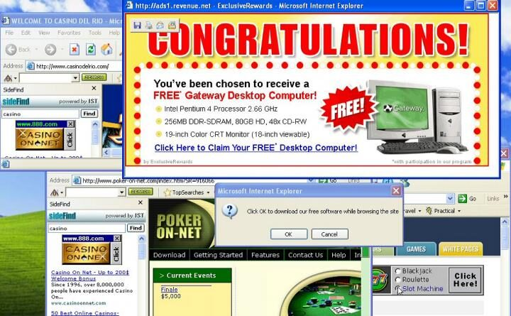

Principales vectores de ataque
Antes de que el malware haga nada, tiene que llegar hasta la víctima. Este módulo repasa los seis caminos de entrada más habituales, desde los que dependen del engaño hasta los que no requieren ninguna acción por parte del usuario.
1 Vectores que dependen de engañar al usuario
Phishing y spear-phishing
Se lleva a cabo generalmente a través de correo electrónico, si bien pueden utilizarse canales alternativos como SMS (SMSishing), aplicaciones de mensajería (whatsappishing) o incluso llamadas de voz (vishing). El mensaje aparenta proceder de una fuente legítima y trata de redirigir a la víctima hacia un sitio web malicioso o directamente adjuntar un archivo con malware. Se denomina spear-phishing cuando el ataque está dirigido a un individuo u organización específicos, en lugar de enviarse de forma masiva.

Watering hole attack
Se trata de un tipo de ataque dirigido. Utiliza un sitio web de confianza que suele ser visitado por los empleados de la organización objetivo. El ataque consiste en comprometer dicho sitio web con código malicioso con el fin de que la víctima descargue el malware al visitarlo, como si el atacante esperase junto a un abrevadero por el que sabe que su presa pasará tarde o temprano.

Malvertising
Consiste en utilizar publicidad en línea para redirigir al usuario a un sitio web controlado por el atacante y lograr que descargue el malware. Según diversos estudios, en el año 2015 más de un tercio de las páginas web más visitadas del mundo resultaron infectadas con algún tipo de malware a través de anuncios malintencionados.
2 Vectores que no requieren interacción del usuario
Los tres vectores anteriores necesitan que la víctima haga algo: abrir un correo, visitar una web o hacer clic en un anuncio. Los dos siguientes son más peligrosos precisamente porque reducen al mínimo, o eliminan por completo, esa dependencia de la acción humana.
Drive-by-download
Técnica que consiste en la descarga automática de software malicioso en el dispositivo de la víctima sin su conocimiento ni consentimiento. A diferencia de otros métodos de infección que requieren alguna forma de interacción del usuario, como hacer clic en un enlace o descargar y ejecutar un archivo, el drive-by-download puede aprovechar las vulnerabilidades del navegador o sus complementos para instalar el malware simplemente visitando un sitio web comprometido.
Exploits
Mediante el uso de vulnerabilidades existentes en los navegadores, el software del usuario, dispositivos IoT u otros servicios expuestos que existen en una organización (servidores web, servicios de RDP abiertos, servidores de correo, etc.), los atacantes consiguen la ejecución de código en la máquina víctima e instalan el malware. Con este método el usuario prácticamente no puede protegerse contra la infección, ya que el atacante ha comprometido previamente el sistema y el malware se utiliza como un mecanismo de persistencia. La mejor medida de seguridad frente a este vector es la actualización constante del software.
3 Amenazas persistentes avanzadas (APT)
Más que un vector concreto, las APT describen una forma de operar que puede combinar varios de los vectores anteriores dentro de una campaña mucho más elaborada y sostenida en el tiempo.
Se trata de ataques sofisticados y elaborados donde un intruso establece una presencia no detectada en un sistema, con un objetivo definido, y durante un periodo prolongado de tiempo. Los ataques APT se encuentran cuidadosamente planificados y diseñados para infiltrarse en una organización, evadir las contramedidas existentes y "volar bajo el radar". Tienen un mayor grado de personalización que un ataque tradicional y generalmente son dirigidos a organizaciones específicas.